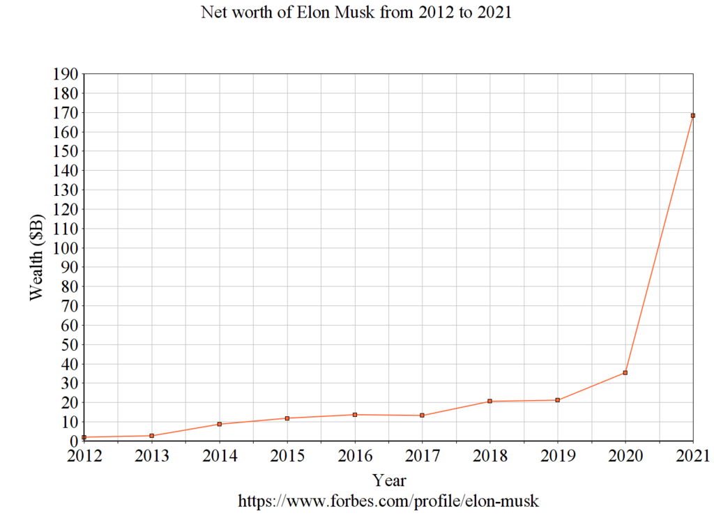

Musk made $165 million when PayPal was sold to eBay in 2002. He was first listed on the Forbes Billionaires List in 2012, with a net worth of $2 billion. At the start of 2020, Musk had a net worth of $27 billion. Throughout that year, his net worth increased by $150 billion, largely driven by his ownership of around 20% of Tesla stock. 
During this, Musk's net worth was often volatile. For example, it dropped $16.3 billion in September, the largest single-day plunge in the history of the Bloomberg Billionaires Index.